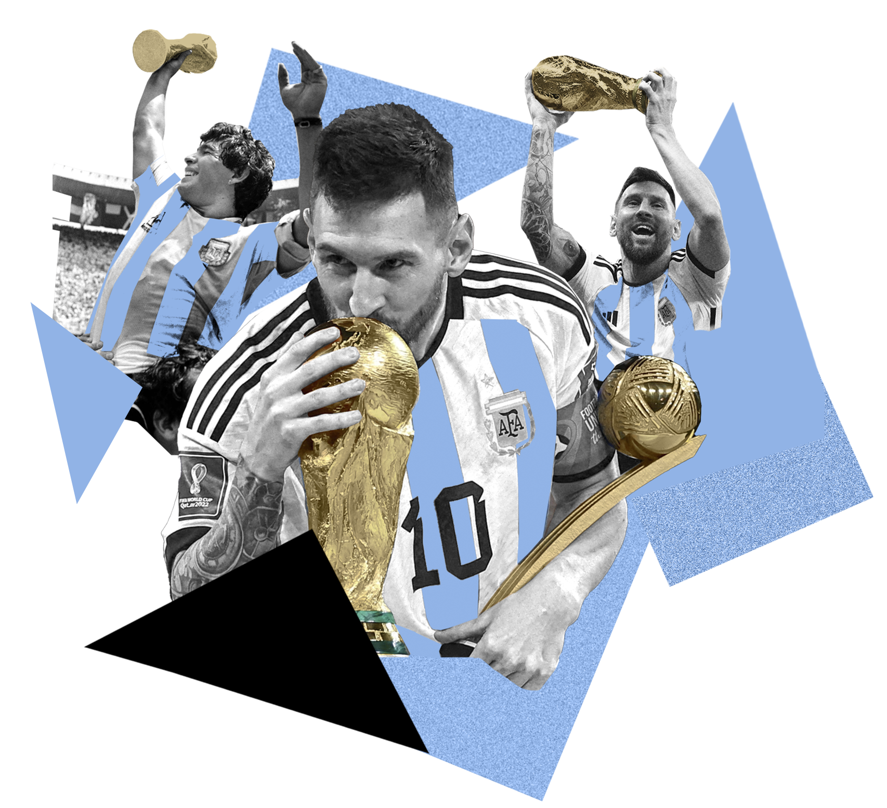

Lionel Messi

G.O.A.T
Lionel Messi
Lionel Messi is an Argentine professional footballer who plays as a forward for Paris Saint-Germain and the Argentina national team. He is considered one of the greatest football players of all time.
- Born: June 24, 1987
- Nationality: Argentine
- Position: Forward
- Clubs: FC Barcelona, Paris Saint-Germain
- Achievements: 7 Ballon d'Or awards, 6 Golden Shoes, 10 La Liga titles, 4 Champions League titles